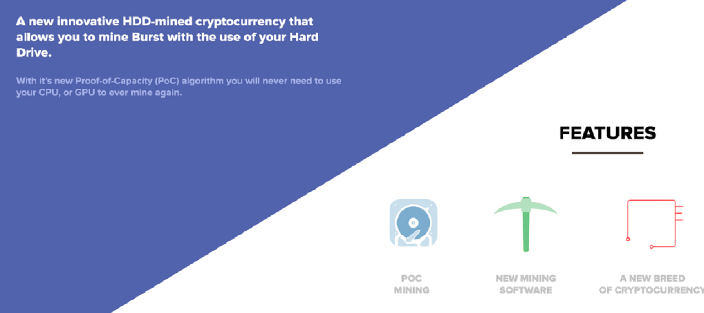
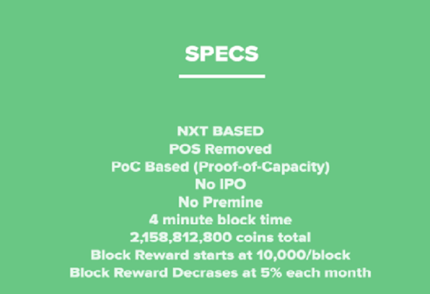
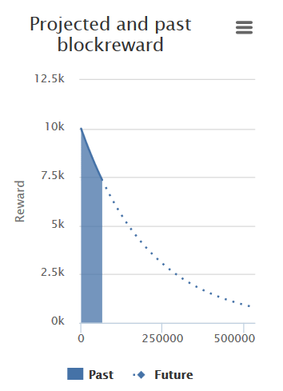
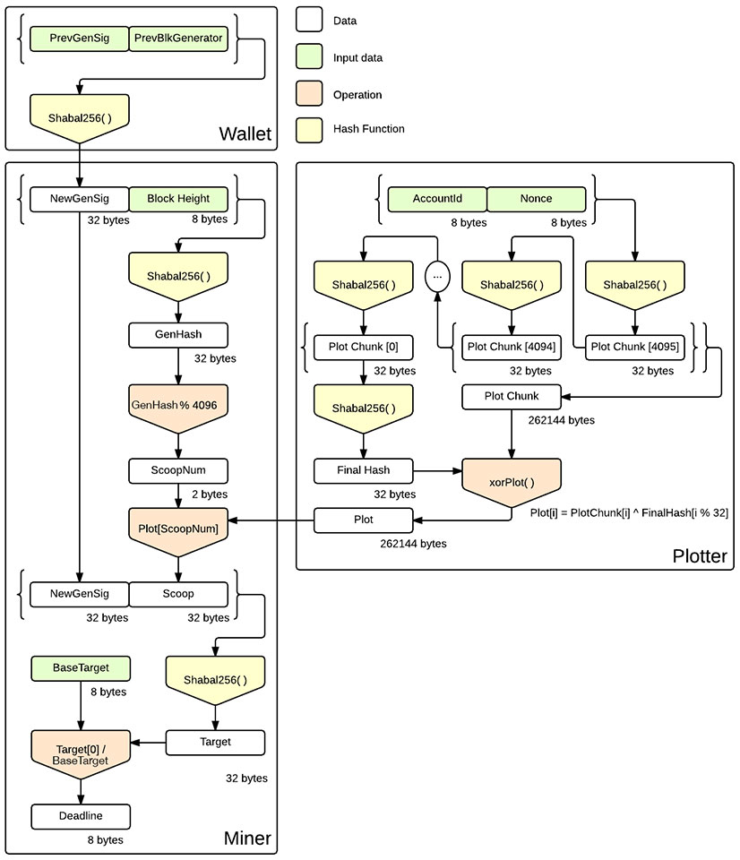

- Home
- Introduction
What is BURST?

Hard Disk Mining
Burst uses a new algorithm for Proof of HDD Capacity (POC) mining. Miners pre-generate chunks of data known as 'plots' which are then saved to disk. The number of plots you store is effectively your mining speed. Every block the miner will skim through the saved plots, and come up with an amount of time until it is able to mine a block if another block hasn't yet been found. After reading through the plots is complete, your hardware can idle until the next block is announced.

Why should I mine? And why BURST of all the crypto currencies?
Clear answer: Because you will earn money! BURST is like any other crypto currency, basically another sort of money, using which you can buy and sell things. In order to do so, you have to transfer the money. All crypto currencies store their transfers from the beginning of the currency into the so-called 'blockchain'. The blockchain consists of blocks. Each block can contain several of these transfers. Users verify the authenticity of each payment by the process called mining.
Different approaches, methods, etc. to how the mining is done exist. For example, in Bitcoin the validity of a block is always calculated from the beginning. This means that when a previous block has been confirmed, every miner begins its calculations from the beginning, all possible solutions will be computed and tried, until the solution is found for the block. These calculations require massive CPU Power and large amounts of electricity.
Burst is different. Burst solutions for a block will be only computed once and are saved to your HDD during the process called plotting. The bigger your hard drive, the more solutions can be stored and the higher is the probability that you will find the confirmation for the block.
Just what does it bring? If you find a block, you get a reward in the form of a certain amount of Burstcoins, which can be exchanged in any crypto market to fiat money. In general, exchange process is Burst into Bitcoin and then Bitcoin to Euro or Dollar.
Burst began with 10,000 Burst reward per block found, the reward declines by 5% roughly every month. Why the reduction? Each crypto currency begins at block 0, the 'Genesis block' and has a certain predefined maximum supply of money. Unlike fiat currencies such as Euro, Dollar etc. the money supply can not be easily expanded. Theoretically, then, depending on acceptance and use of the currency, crypto currencies are getting more valuable compared to conventional currencies as the money supply from conventional currencies is steadily increasing.
After the 'last' block is mined, miners' earnings miners will fall sharply, because then there will be no block reward issued any more. What remains are the transaction fees which miners will continue to receive as reward for mining blocks. How many blocks are mined so far and how many can be mined in future? Check here: http://burstcoin.eu/charts/mined-burstcoins
Is it worth it? Yes. Burst mining consumes almost no electricity, when compared to other currencies, which consume more electricity. The calculation is simple:
Investment cost of a Miner and depreciation per month for a period of, say, three years of operation. Cost of electricity, which is very low for burst mining. Aggregating and confront the income from the sale of Burst. A income calculator can be found here: http://burstcoin.eu/calculator
If you already have a computer, as I believe since you are reading this, then you can get started right away without investment costs. Great thing about Burst is that the mining is extremely fair and all miners need to use a PC. Development like many other currencies experienced, that there will be special hardware made for mining depriving you of 'joining' as a normal user, will not happen here . With Burst only one thing decides, how much disk space you have. Cloud storage can not be used because your miner has to process entire plot files within 2.5 minutes. Therefore, you can only use a PC with disks connected through SATA or USB 3.0.
So that's enough of the theory. Check out other guides where we show you how to get started.
Miners generate and cache chunks of data known as 'plots', which are divided into 4096 portions known as 'scoops'. Plots are generated by taking a public address and a nonce, then hashing it, pre-appending the resulting hash, repeating the hash-pre-append cycle many times, and then hashing the whole thing and xor'ing the last hash with the whole thing.lots are staggered together so chunks of the same scoop number are together, then written to disk.Each block has a generation signature which is derived only from the previous block's generation signature and miner, so it is difficult to manipulate.
When mining, the scoop number to be used for a block is derived from the generation signature and the block height, so the miner reads all relevant scoops (each plot will have 1 relevant scoop, and staggering allows for larger sequential read with less seeking). Only 0.024% of the stored data will need to be read each block.
The generation signature is hashed with each scoop. 8 bytes are taken from the hash, then divided by a scaling factor (inverse difficulty). The resulting number is a number of seconds. If that many seconds passes since the last block without a new one, the address/nonce combination used to generate that plot/scoop is eligible to announce a new block. The miner's hardware can just sit idle until a new block is announced. The address/nonce is included in the block as proof of eligibility, and the block is signed by that address.
Technically, this mining process can be mined POW-style, however mining it as intended will yield thousands of times the hashrate, and your hardware will sit idle most of the time. Continuously hashing until a block is found is unnecessary, as waiting long enough will cause any nonce to eventually become valid.

Flow chart
The plotting part is done once for each nonce, and the results are saved to disk, and the mining reads the saved data from disk.

BURST and the Future: A Few Paragraphs of Speculation
Since Bitcoin was launched in 2009 much has happened in the cryptocurrency community; new coins, with added features, have been launched recently. This story is of one such currency, namely Burst. So far Burstcoin is not only the first Proof of Capacity (POC) coin — no clones exist today — but since its launch in mid-August 2014 the main developer has put in immense efforts on improving Burstcoin. Often the coin is referred to as simply BURST/Burst, as that is the handle on the exchanges.
From the very beginning Burst was innovative and forward-thinking in a number of ways, a trait continuing since the launch. However, this time there we have some really big news:
Burst coin’s technological developer, in cooperation with CIYAM developers, has been able to bring one of crypto-currencies most sought after features. Just as Burst could announce it was the first and so far only HDD-mining coin, we proudly announce that it has now also become the first coin to implement Smart Contracts in a live environment.
You have probably heard of Smart Contracts. Ethereum became lauded for planning to implement Smart Contracts. However, for over a year now all we seen is planning and no implementation; in fact they still do not estimate release to be ready for another several months.
Likewise, Counterparty announced they would be implementing Smart Contracts recently, in fact they made it sound like the features were working, but that turned not to be the whole story. Counterparty’s attempt to combine their network with the Bitcoin network displayed serious problems, such as what if a node fakes including a Smart Contract into their block that isn’t approved by Counterparty but is by Bitcoin? Conterparty does not believe they will have something to release until March either. In the meantime you can start writing Smart Contracts for Burstcoin today.
They enable many things to be run on the blockchain that would otherwise have to be individually programmed in or reviewed by a core developer and, for maximum trustlessness, every miner on the network should review the source code. Potentially, every one of those could have a security risk involved should some bugs get inserted into the code.
Since more and more users discovered that Bitcoin is not anonymous at all; quite the opposite: Transactions earlier only observed by financial institutions, are in the Bitcoin’s blockchain fully traceable and able to be viewed. Contents of every wallet are open for all to see, as whom sent funds to whom. There are ways so circumvent this, or at least make it harder to track down who owns what, but the main problem remains.
This has led to immense activity in the crypto-community—launching coin after coin claiming to be anonymous. Today, probably Monero comes closest, however they are behind schedule in development and are hard for the everyday man to use. When it comes to Counterparty Bitcoin has been critical, while Ethereum admits they are far behind schedule.
Has Burst, a coin without a pre-mine or IPO but with an immense level of dedication and community support, solved this year long struggle to be truly anonymous? It might very well be so. CIYAM, a well-known and respected member of BitCoinTalk thinks it may be the case. In a comment, he writes:
One member of the Burst (…) community asked me whether AT could be used to help anonymize transfers and at first I thought this was simply not possible as AT has *no secrets*. I am glad I then thought about this again — and suddenly I realised that the “atomic cross-chain transfer” (….) use case could be changed ever so slightly to do something I had not thought that AT could ever do (help provide anonymity).